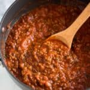

Spaghetti Sauce

DESCRIPTION
Spaghetti sauce is widely used in italian-American cuisine, it is known as alla marinara in Italy, where it is typically made with tomatoes, basil, and oregano, but also sometimes olives, capers, and salted anchovies. It is used for spaghetti and Vermicelli, but also with meat or fish.
INGREDIENTS
- 1/2 cup of butter
- 3 tablespoons of olive oil
- 1 large onion, chopped
- 3 cloves garlic, chopped
- 1 pound ground beef
- 1 pound mild sausage
- 4 teaspoons italian seasoning
- 2 teaspoons salt (optional)
- 2 teaspoons dried rosemary
- 3/2 teaspoons dried oregano
- 1/2 teaspoon ground black pepper
- 76 fluid ounces water
- 1(29 ounces) can tomato puree
- 3(6 ounces) cans tomato paste
STEPS
- Heat butter and olive oil together with onions and garlic in a large pot over medium heat; cook and stir ground beef and sausage in the onions mixture until browned and crumbly, 10 to 15 minutes. Stir italian seasoning, salt, rosemary, oregano, and black pepper into ground beef-sausage mixture; simmer for 20 minutes.
- Pour water, tomato puree, and tomato paste into ground beef-sausage mixture; simmer, stirring, ocasionally, over low heat until flavors have combined, at least 2 hours.